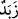

17. O, gökten su indirdi de vâdiler kendi ölçülerince sel olup aktı. Bu sel, üste
çıkan bir köpüğü yüklenip götürdü. Süs veya (diğer) eşya yapmak için ateşte
erittikleri şeylerden de buna benzer köpük olur. İşte Allah hak ile bâtıla böyle misal
verir. Köpük atılıp gider. İnsanlara fayda veren şeye gelince, o yeryüzünde kalır.
İşte Allah böyle misaller getirir.
“O” Allah Teâlâ “gökten” buluta süzülen, buluttan da yeryüzüne inen “su indirdi
de…”
Bu sudan, “vâdîler kendi ölçülerince sel olup aktı.” Vâdî, suyun çok aktığı yerdir.
Burada mahal zikredilip o mahalde bulunan şeyin kasdedilmesi kabîlinden olarak
nehirler murâd edilmiştir. “ __WORD__ (vâdiler)” kelimesinin nekre olarak zikredilmesi, suyun
vâdîlerde münâvebeli olarak kalmasından ve bu sebeple bazı vâdîler çağlayıp akarken
bazılarının akmamasından ileri gelmiştir.
Vâdîlerin kendi ölçülerince akması, mecâzî mânâdadır. Allah’ın bildirdiği miktarda
yağmurun üzerlerine yağdığı şeylere zarar vermeden, onlara faydalı olacak kadar, yani
insanların zarar görmeyecekleri kadar demektir.
Başka bir ifade ile Cenâb-ı Hak o yağmurun fayda eriştirmesini ve ziyân
eylememesini takdîr etmiştir. Çünkü Allah Teâlâ burada yağmuru hakka mesel kılmış,
örnek getirmiştir. Bu yağmurun zararsız ve tamamen faydalı olması, mahsûlü, evi-barkı
götüren yağmurlar ve seller gibi olmaması gerekir.
Vâdîlerin kendi ölçülerince akmasının gerçek mânâda olması da mümkündür. O zaman
bunun mânâsı ‘vâdîlerin büyüklük ve küçüklüğü bakımından kendi ölçülerine göre’
demek olur. Yâni vâdî küçükse su az, vâdi genişse su da fazla olur. Her vâdî ufaklıkta,
büyüklükte, darlıkta, genişlikte kendi miktarınca yağmur suyunu taşır.
“Bu sel, üste çıkan” suyun üstüne çıkan “bir köpüğü yüklenip götürdü.” Buradaki “ __WORD__ (köpük)”, suyun üstüne çıkan köpük ve benzerlerine verilen addır. Su üstüne çıkan
şey ister suyun azgınca akmasından ister başka bir sebepten meydana gelsin fark etmez.
Bu kelimenin asıl mânâsı, bir şeyden oluşan ve ona benzeyen demektir. Köpük de
böyledir.
“Süs veya (diğer) eşya yapmak için” yani süs eşyası elde etmek için… Çünkü süsler,